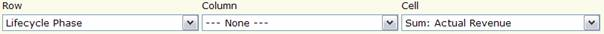

| Tool Mentor: Reviewing Product Lifecycle Data with IBM Rational Focal Point |
 |
|
| Related Elements |
|---|
The examples in this tool mentor are based on the Product Portfolio Management, Version 1.0, add-on and IBM® Rational® Focal Point™, Version 6.4. If you use the add-on, most of the necessary modules and views have already been configured for you. If you are not using the add-on, your workspace will require some configuration to support the features described in this tool mentor. ConfigurationFirst, configure Rational Focal Point with the attributes needed for the product's lifecycle review by following these steps:
See the "Configure" section in Focal Point Help for further details on how to create workspaces, modules, attributes, and views. Review products by lifecycle phasePortfolio managers are interested in following up on how the products in the portfolio distribute over the lifecycle phases. To do this, follow these steps:
Review revenue by lifecycle phase and productsUsing the same Statistical display as in the previous example, you can view different types of financial information (as long as the types are included in the view definition). For example, if you want to review the actual revenue for all products, in Cell, select "Sum: Actual Revenue," instead. The data in the cells is then summarized from all products for that lifecycle phase.  If you want to view the actual revenue data for a particular product, click the product link in the result view. |
Licensed Materials - Property of IBM |